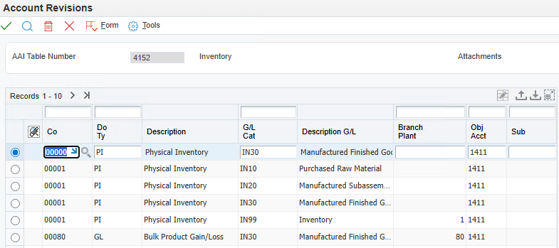

Overview
Automatic Accounting Instructions (AAIs) determine which general ledger accounts are affected when transactions are created by JD Edwards programs. They serve as the mapping layer between business transactions and the general ledger.
Distribution AAIs are stored in the Distribution/Manufacturing AAI Values table (F4095). They are accessed via fast path DMAAI from any distribution setup menu.
AAI Numbering by Module
| Module | AAI Range | Description |
|---|---|---|
| Manufacturing | 3000s | Work orders, WIP, completions, and variance accounting |
| Inventory | 4100s | Inventory issues, adjustments, transfers, and physical inventory |
| Sales | 4200s | Cost of goods sold, revenue, receivables, and pricing |
| Purchasing | 4300s | Receipts, RNV, voucher match, variances, and landed costs |
How RapidReconciler Uses AAIs
DMAAI configuration is one of the most common root causes of inventory reconciliation variances. When an AAI points to the wrong account — or is missing entirely — transactions post silently to an incorrect GL account, and the discrepancy only surfaces during reconciliation. Tracing the root cause manually requires cross-referencing DMAAI table entries, transaction document types, and GL class code assignments across potentially thousands of transactions.
RapidReconciler uses the DMAAI configuration directly to support the reconciliation process in several ways:
| RapidReconciler Feature | How AAIs Are Used |
|---|---|
| Model AAI Table (Integrity Report 1) | Uses DMAAI table 4152 to assign a GL account to every item ledger transaction and balance record during import. If a GL class code is missing from the model table, that item's value is excluded from the reconciliation. |
| DMAAI Entry Integrity (Integrity Report 2) | Compares entries in the model table to other balance sheet DMAAI tables (3110, 3130, 4122, 4126, 4134, 4172, 4240, 4310). Identifies business unit, object, and subsidiary mismatches and net-zero account configurations that would prevent transactions from reaching the correct GL account. |
| Report 0 — JDE DMAAs | Provides a filterable, sortable view of all DMAAI entries from F4095 and F4096 (including flex accounting) within RapidReconciler. Used to diagnose specific transactions on the Transactions page without navigating through JD Edwards setup menus. |
| Transaction Detail — Section 6 | When drilling into an unreconciled transaction on the Transactions page, Section 6 of the detail report lists all DMAAI entries for each GL class code in the transaction, making it straightforward to identify which AAI caused the account mismatch. |
| Flexible Accounting support | RapidReconciler reads flex accounting rules from F4096 alongside F4095, ensuring that transactions using Flexible Sales Accounting are correctly assigned to their flexed accounts in the reconciliation. |
Practical impact: A single incorrectly configured AAI can cause every transaction of a given type and GL class to post to the wrong account — producing a systematic variance that grows every period. RapidReconciler's integrity reports surface these mismatches proactively, before they accumulate into large reconciling items at period end.
Section 1: AAI Setup and Configuration

DMAAI from any distribution setup menu.1.1Key Structure
An AAI must be established for any unique combination of the following three fields:
- Company Number
- Document Type
- GL Class Code
1.2Default Search Sequence
If the system cannot find an AAI for a specific combination, it falls back through the following search sequence. The document type must match in all cases.
Example: For Company 00100 with GL Class code IN20:
| Step | Search Criteria | Result if Not Found |
|---|---|---|
| 1 | Company 00100, GL Class IN20 | Proceed to Step 2 |
| 2 | Company 00100, GL Class **** (wildcard) | Proceed to Step 3 |
| 3 | Company 00000, GL Class IN20 | Proceed to Step 4 |
| 4 | Company 00000, GL Class **** (wildcard) | Proceed to Step 5 |
| 5 | Not found | Error message generated |
1.3Business Unit
The Business Unit is optional in AAI setup. If left blank, the system pulls the business unit from the Branch/Plant on the transaction. Exceptions include:
- Project Number / Subsequent Cost Center — If a Project Number is assigned to a business unit in Revise Single Business Unit (P0006), it will be used as the business unit portion of the account when the AAI business unit is blank.
- Sales Update (R42800) — Processing option 5 on the Defaults tab controls where the Business Unit is sourced from: Subsequent Cost Center, Branch/Plant on the order, or Sold-To Address Book Number.
- Flexible Sales Accounting — The Business Unit can also be populated using Flexible Sales Accounting (P40296) off menu G4241.
1.4GL Class Code Sources
For inventory transactions, the GL class code is sourced from the Item Location table (F41021), or for non-stock items, from the Item Master table (F4101). For sales and purchasing transactions, the GL class code is determined by the inventory interface for the line type:
| Inventory Interface | GL Class Code Source |
|---|---|
| Y and D | Item Location table (F41021) |
| N | The Line Type definition |
| A | Debits the account number entered on the PO; pulls GL class code for RNV and Variances from the Line Type definition |
| B | Debits the account number entered on the PO; pulls GL class code for RNV and Variances from the Item Location table (F41021) |
Exceptions:
| Transaction Type | GL Class Code Source |
|---|---|
| Advanced Pricing | AAIs 4270 and 4280 pull GL class codes from the Advanced Pricing Adjustment Definition (P4071). If blank, sourced from the line item. |
| Taxes | Pulled from the line type, inventory item, or GL Offset in Tax Rate/Areas (P4008) |
| Landed Cost | Pulled from the Landed Cost Revisions program (P41291) |
| Variance (Line Type A or B) | If the Voucher Match Variance Account flag is checked in the line type definition, variances are written to a variance account; if unchecked, written to the account on the purchase order |
1.5Financial AAIs
Financial AAIs are stored in the Automatic Accounting Instructions Master table (F0012). Fast path: AAI. Use the wildcard character * to search — for example, entering RT* returns every RT____ combination available.
Accounts Payable:
| AAI | Purpose | GL Class Code Source |
|---|---|---|
| PC xxxx | Financial AAI for payables | Assigned in Supplier Master Information (P04012). PC____ is valid (may be blank). |
| PT xxxx | Financial AAI for purchasing taxes | Four-character GL Offset from Tax Rate/Area (P4008). For "U" and "B" tax explanation codes, the subsidiary is the Tax Rate/Area. |
Accounts Receivable:
| AAI | Purpose | GL Class Code Source |
|---|---|---|
| RC xxxx | Financial AAI for receivables | Assigned in Customer Billing Instructions (P03013) on the GL Distribution tab |
| RT xxxx | Financial AAI for sales taxes | Four-character GL Offset from Tax Rate/Area (P4008) |
1.6AAI Error Messages
| Error # | Message | Resolution |
|---|---|---|
| 0381 | AAI not set up | Error at Sales Update (R42800). The message specifies which AAI is missing. Set up the missing entry in the DMAAI table. |
| 3429 | Invalid Distribution/Manufacturing AAI | Interactive error for inventory or purchasing transactions. Specifies which AAIs are not configured. |
| 0028 | Account number invalid | The AAI is pointing to an account not in the chart of accounts. Set up a valid account off menu G09411. |
| 1829 | Record not set up in AAI file | Tax AAI is not configured. Set up RT xxxx, PT xxxx, or GT xxxx in the financial AAI schedule. |
Section 2: Manufacturing AAIs (3000 Series)
Manufacturing AAIs control journal entries for each transaction type in the manufacturing accounting cycle. When properly implemented, manufacturing accounting provides the ability to:
- Measure expected cost versus actual cost by activity
- Differentiate cost by individual product number rather than averaging across product lines
- Identify areas requiring cost improvement and determine how to achieve them
- Accurately measure the results of cost-reduction efforts
Note: General ledger transactions are not generated until the Manufacturing Journal Entries Program (R31802) is run in final mode for the work order.
2.1Manufacturing Cost Flow
Manufacturing costs flow through the following accounts:
| Stage | Account Type |
|---|---|
| Material Purchases / Direct Labor / Manufacturing Overhead | Cost inputs |
| Raw Material Inventory | Balance sheet — raw materials on hand |
| Work in Progress (WIP) | Balance sheet — costs of items being manufactured |
| Finished Goods | Balance sheet — completed items awaiting sale |
| Cost of Goods Sold (COGS) | Income statement — cost of items sold |
| Selling and Administrative | Income statement — period expenses |
Important Note on GL Class Code Usage:
The credit side of the IM (Material Issue) transaction uses the GL class codes of the individual components to write journal entries reducing raw material or sub-assembly inventory.
The debit side of the IM transaction and all other manufacturing transaction types use the GL class code of the parent item.
2.2AAI Table Reference
| AAI | Account | Purpose | Programs |
|---|---|---|---|
| 3110 | Raw Material / Sub-Assembly Inventory | Credit side of material issues. Uses GL class codes of components, not the parent item. | Manufacturing Accounting (R31802A) |
| 3120 | Work In Process (WIP) | Debit for material issues and labor; credit for completions; debit or credit for variance clearing. | Manufacturing Accounting (R31802A) |
| 3130 | Finished Goods / Sub-Assembly Inventory | Debit for completions. Also used as the scrap account for parent scrap (IS) transactions. | Manufacturing Accounting (R31802A) |
| 3220 | Labor Variance | Offset for labor variance at variance accounting. | Variance Accounting (R31804) |
| 3240 | Material Variance | Offset for material variance at variance accounting. | Variance Accounting (R31804) |
| 3260 | Planned Variance | Offset for planned variance at variance accounting. | Variance Accounting (R31804) |
| 3270 | Engineering Variance | Offset for engineering variance at variance accounting. | Variance Accounting (R31804) |
| 3280 | Other Variance | Offset for other variance at variance accounting. | Variance Accounting (R31804) |
| 3401 | Payroll Accrual | Credit side of labor, outside operations, and cross-charge transactions. | Manufacturing Accounting (R31802A) |
2.3Transaction Journal Entry Reference
IM — Material Issue
When material is issued to a work order, the value is transferred from Raw Material Inventory to WIP at Standard Cost × Actual Quantity. Depending on the company's setup, cost types B1-B4, C1-C4, D1-D2, and extras may also be moved.
| AAI | Account | Basis | |
|---|---|---|---|
| Debit | 3120 | Work In Process (WIP) | Actual Issues × Frozen Standard Cost (F30026) |
| Credit | 3110 * | Raw Material / Sub-Assembly Inventory | Actual Issues × Frozen Standard Cost (F30026) |
* Credit side uses GL class codes of each component, not the parent.
IH — Labor, Outside Operations, and Cross-Charges
Labor and overhead accruals are transferred to WIP when Hours and Quantities are recorded (P311221) and the Hours and Quantities Update (R31422) is run. Dollars are transferred at Actual Hours × Actual Rate.
| AAI | Account | Basis | |
|---|---|---|---|
| Debit | 3120 | Work In Process (WIP) | Actual Labor × Frozen Work Center Rates |
| Credit | 3401 | Payroll Accrual | Actual Labor × Frozen Work Center Rates |
IC — Completions
Completions are reported using the Completions Program (P31114). WIP is credited and Finished Goods is debited at Actual Quantity × Standard Cost.
| AAI | Account | Basis | |
|---|---|---|---|
| Debit | 3130 | Finished Goods / Sub-Assembly Inventory | Units Completed × Frozen Standard (F30026) |
| Credit | 3120 | Work In Process (WIP) | Units Completed × Frozen Standard (F30026) |
IS — Parent Scrap
| AAI | Account | Basis | |
|---|---|---|---|
| Debit | 3130 (Scrap) | Scrap Account | — |
| Credit | 3120 | Work In Process (WIP) | — |
IV — Variance Accounting
Variance accounting can be run for a work order only once — after all material and labor transactions have been posted. WIP is credited and variance accounts are debited.
| AAI | Account | |
|---|---|---|
| Debit or Credit (as required) | 3120 | Work In Process (WIP) |
Offsetting variance entries are directed to AAIs 3220, 3240, 3260, 3270, or 3280 depending on variance type. Each variance AAI receives either a debit or credit depending on whether the variance is favorable or unfavorable.
2.4Variance Types
| Variance Type | How It Is Generated |
|---|---|
| Engineering Variance | Determined when Work Order Processing (R31410) is run. The system compares Standard Cost to Current Cost. Current Cost reflects BOM or routing changes not yet included in the standard. |
| Planned Variance | Generated when a different raw material is used than specified in the current BOM, or if the item is assembled at a different work center with different rates. |
| Material Variance | Generated when the material or labor actually used differs from what was planned. |
| Labor Efficiency Variance | Calculated when a labor efficiency other than 100% is used. |
| Other Variance | Used to clear WIP accounts for a work order. For example, if material was issued for 4 units but only 3 were completed and the unused material was not returned, the remaining value is transferred to this variance account. |
2.5Setup Tips
Branch/Plant Constants — GL Explanation Field
Set the General Ledger Explanation field in Branch/Plant Constants to "2" (Primary Part Number). The default value of "1" inserts the part description into the journal entry. Part descriptions often become less accurate over time. Using the Primary Part Number clearly identifies the item generating each journal entry, making variance research and report generation significantly easier.
Manufacturing Constants
Work Center Efficiency — Enabling this feature creates separate journal entries for labor efficiency. For organizations new to Manufacturing Accounting, it is recommended to delay including Work Center Efficiency in overhead for 12 to 18 months until sufficient real-world data is available to calculate efficiency accurately.
Fixed and Variable Overhead — JD Edwards calculates both fixed and variable overhead identically as a rate or percentage of labor. If both are needed, consider configuring only Variable Overhead in Manufacturing Constants and using the Cost Component add-on functionality for Fixed Overhead, which provides more granular control.
Accounting Cost Quantity (ACQ) — This field determines setup cost by dividing the setup time by the normal production quantity. It represents an average lot size and must be set correctly. Work orders with quantities larger than this value will generate favorable setup variances; smaller quantities will generate unfavorable variances.
Caution: If ACQ is left at the default value of "1" and setup costs are significant, the per-unit cost will be dramatically overstated. For example, a $5,000 setup cost with ACQ = 1 results in $5,000 per unit rather than $0.50 per unit for a 10,000-unit production run.
Time Basis Code (TBC) — Stored in the second description of UDC table 30/TB and used to divide labor and machine time for cost calculations. The default value of "4" represents hours per 10,000 units. This should be changed to reflect the actual quantities produced. Setting up separate TBCs for common batch sizes avoids repeated manual conversions.
Item Master / Item Branch — GL Class Code
The GL class code used for journal entry creation is sourced from the Item Branch Location table (F41021) — not from the Item Branch table (F4102), as is commonly assumed. JD Edwards allows different values in these two tables without generating a warning.
Tip: Create an exception report to identify mismatches between F41021 and F4102 before running a cost rollup. RapidReconciler Integrity Report 5 provides this information. Undetected differences may produce unexpected journal entry results.
Bill of Material and Routing
- Bill Type — Only the "M" type (production manufacturing) BOM is used for cost rollups. Other types cannot be used for costing without data replication in a separate environment.
- Effectivity Dates — Only components and operations effective as of the date entered in the rollup program's processing options will be included. Keep effectivity dates current, especially during periods of major product changes.
- BOM Percent Scrap and Routing Operation Scrap — These fields plan for expected component scrap. BOM scrap is entered by component as a percentage; Routing operation scrap is entered as a yield percentage per operation, accumulated from the bottom up. Both increase the A2 Material Scrap Cost component.
- Shrink Factor — Allows planning for production yield. If 100 usable units are needed and 40% scrap is expected, the system automatically increases the work order quantity. The Shrink Factor has no effect on the rolled cost.
2.6Execution Tips
Work Order Processing
When Work Order Processing (R31410) is run, the following costs are captured and will not update for open work orders if changed afterward:
- Frozen standards
- Current costs
- Planned costs
Recommended Work Order Statuses
| Status | Description |
|---|---|
| 90 | Complete — all manufacturing is complete |
| 95 | Manufacturing Complete — manufacturing accounting may begin |
Work Order Completion Review — Two Required Checks
Before moving a work order from Status 90 to Status 95 and running Manufacturing Accounting, perform both of the following checks:
Check 1 — Material
Using the Inventory Issues program (P31113), review work orders closed during the most recent business cycle. Verify that the Quantity Ordered and Quantity Issued fields contain the same values. If the values differ, a variance exists — research and correct it before proceeding. Valid variances (e.g., component scrap) should be documented in the Remarks field before running Manufacturing Accounting.
Check 2 — Hours
Using the Order Hour Status Program (P31121), review work orders closed during the most recent business cycle. Compare Actual Hours to Standard Hours for Machine, Labor, and Setup. If the values differ, research and correct before running Manufacturing Accounting (R31802 and R31804).
Actual Labor — UDC Table 31/ER
If actual labor is charged to work orders by individual, UDC table 31/ER must be maintained for each employee charging actual hours. This table is referenced by the Work with Work Order Time Entry Program (P311221) to retrieve the employee's labor rate. If payroll does not maintain this table systematically, a separate process must be established to keep it synchronized with payroll records.
Reconciliation with Payroll
Hours charged to the manufacturing system through Time and Attendance should be reconciled with Payroll regularly to ensure that actual labor costs are being captured accurately. Any difference between hours reported in Time and Attendance and hours reported against work orders must be investigated and accounted for to maintain accurate product costs.
Section 3: Inventory AAIs (4100 Series)
Inventory AAIs control journal entries for inventory transactions including issues, adjustments, transfers, reclassifications, and physical inventory.
Note on RapidReconciler: RapidReconciler uses DMAAI table 4152 with document type PI as the default to determine which inventory accounts are displayed in the application. This is the only JD Edwards configuration required for RapidReconciler. The document type may be changed by the administrator in the company settings, which requires setting up additional DMAAI entries for the specified document type.
3.1AAI Table Reference
| AAI | Account | Purpose | Programs |
|---|---|---|---|
| 4122 / 4124 | Inventory / Expense or COGS | Journal entry for issues, adjustments, and transfers. | Inventory Issues (P4112), Transfers (P4113), Adjustments (P4114), Reclassifications (P4116) |
| 4126 / 4128 | Inventory / Expense or COGS | Zero balance adjustment — used when quantity equals zero but dollars remain. | P4112, P4113, P4114, P4116 |
| 4134 / 4136 | Inventory / Expense or COGS | Records change to COGS when the cost of an item changes. | Quantity Revisions (P41022), Item Branch/Plant (P41026), Batch Cost Maintenance (R41802) |
| 4141 | COGS | Variance when a transaction has a different standard cost than what is in the Item Cost file (F4105). | P4112, P4113, P4114, P4116 |
| 4152 / 4154 | Inventory / COGS | Change to inventory value when quantity counted does not equal quantity on hand in a physical inventory. Also used by RapidReconciler as the default DMAAI to determine inventory accounts. | Cycle Count Update (R41413), Tag Count Update (R41610) |
| 4172 / 4174 | Inventory / Expense or COGS | Change in inventory value when the unit cost of an item is changed through Future Cost Update. | Future Cost Update (R41052) |
Section 4: Sales AAIs (4200 Series)
Sales AAIs control journal entries for the sales accounting cycle including COGS, revenue, receivables, taxes, and advanced pricing.
4.1AAI Table Reference
| AAI | Account | Purpose | GL Class Code Source |
|---|---|---|---|
| 4210 | Inventory | Credit side of standard sales transaction — reduces inventory. | Item Location |
| 4220 | COGS | Debit side of standard sales transaction — records cost of goods sold. | Item Location |
| 4230 | Sales / Revenue | Records sales revenue on standard sales transactions. | Item Location |
| 4240 | Inventory | Standard sales transaction journal entry. | Item Location |
| 4245 | Accounts Receivable (Trade) | Records the receivable on standard sales transactions. | Customer Master |
| RC | Accounts Receivable | Financial AAI for receivables on standard sales transactions. | Customer Master |
| 4250 | Sales Tax Liability | Records sales tax liability on standard sales transactions. | Tax Rate/Area |
| 4260 | Interbranch Revenue | Records interbranch revenue when processing options are set in Sales Order Entry (P4210) and Sales Update (R42800). | Item Location |
| 4270 | Advanced Price Adjustment | Records discount or markup for advanced price adjustments. | Price Adjustment Type (P4071) |
| 4280 | Advanced Price Accruals | Records the offset to 4270 for accruals in Advanced Pricing. | Price Adjustment Type (P4071) |
4.2Standard Sales Transaction Journal Entries
The Sales Update program (R42800) generates the following entries for the cost side of a sale:
| Account | Debit | Credit | AAI |
|---|---|---|---|
| COGS | x | 4220 | |
| Inventory | x | 4210 |
Section 5: Purchasing AAIs (4300 Series)
Purchasing AAIs control journal entries for the purchasing cycle including receipts, received not vouchered (RNV), voucher match, cost variances, taxes, landed costs, and receipt routing.
5.1AAI Table Reference
| AAI | Account | Purpose | Programs |
|---|---|---|---|
| 4310 | Inventory | Debit inventory at time of receipt. | Receipts by PO (P4312), Receipts by Item (P4312) |
| 4315 | Non-Stock Asset | Journal entry for receipt of non-stock assets. | P4312, Match Voucher to Open Receipt (P0411) — 2-way match |
| 4320 | Received Not Vouchered (RNV) | Credit RNV at receipt; debit RNV at voucher match. | Receipts (P4312); Match Voucher to Open Receipt (P0411) |
| 4330 | Purchase Price Variance / Inventory | Records variance when invoice amount at voucher match differs from receipt amount. Requires Voucher Match Variance Account flag to be checked in Line Type definition. Written to F4111. | Match Voucher to Open Receipt (P0411) |
| 4332 | Cost of Sales Variance | Records variance to Cost of Sales when quantity on hand is less than quantity vouchered. Invoked when goods have been sold prior to voucher match. Not written to F4111. | P0411; Stand Alone Landed Cost (P43214) if QOH < 0 |
| 4335 | Standard Cost Variance | Records standard cost variance at receipt when receiving at a cost different from Standard Cost (07) in F4105. Not written to F4111. | Receipts (P4312); P0411 |
| 4337 | Material Burden | Accounts for all costs in addition to purchase price for standard cost items. Always results in a credit. Invoked exclusively by the receipts program — not by voucher match. | P4312 |
| 4340 | Exchange Rate Variance | Records exchange rate variance at voucher match. Not written to F4111. | P0411 |
| 4350 / 4355 | Tax Expense or Inventory / Temporary Tax Liability | Records tax during receipt or voucher match. AAI 4355 is not used if taxed at voucher match. | Receipts (P4312), P0411 |
| 4365 / 4370 | Prior to Receipt/Completion Liability / Routing Operation | Records journal entries at specified steps in a receipt route. | Movement & Disposition (P43250) |
| 4375 | Expense | Debits expense account for items dispositioned off during receipt routing. | P43250 |
| 4385 / 4390 | Inventory or Landed Cost / Landed Cost Temporary Liability | Records landed costs. Written to F4111. | Receipts (P4312), Stand Alone Landed Cost (P43214) |
| 4400 / 4405 | Inventory / COGS or Expense | Zero balance adjustment — used when quantity equals zero but dollars remain. | Receipts (P4312) |
5.2Stock Purchase — 3-Way Match Journal Entries
Step 1 — Purchase Order Entry (P4311)
No journal entries are created at Purchase Order Entry.
Step 2 — Receipt (P4312)
| Account | Debit | Credit | AAI |
|---|---|---|---|
| Inventory | x | 4310 | |
| Received Not Vouchered (RNV) | x | 4320 |
Step 3 — Voucher Match (P4314)
| Account | Debit | Credit | AAI |
|---|---|---|---|
| Received Not Vouchered (RNV) | x | 4320 | |
| A/P Trade Account | x | PC |
5.3Purchase Price Variance AAIs
| AAI | Program | When Invoked |
|---|---|---|
| 4330 | Voucher Match (P4314) | Invoked when vouchering at a different amount than what was received. |
| 4332 | Voucher Match (P4314) | Invoked when goods have been sold prior to voucher match and a cost variance exists. Triggered when quantity on hand is less than quantity being vouchered. |
| 4335 | Receipts (P4312) | Invoked when receiving goods at a different cost than the Standard Cost (07) in F4105. Further variances at Voucher Match are booked to AAIs 4330/4332. |
Example 1 — Variance at Voucher Match (AAI 4330)
A PO is issued for $3.75 per item. The item is received at $3.75, but the supplier invoice is $4.00.
| Account | Debit | Credit | AAI |
|---|---|---|---|
| RNV | $3.75 | 4320 | |
| Purchase Price Variance | $0.25 | 4330 | |
| A/P Trade Account | $4.00 | PC |
Example 2 — Variance Split Between Inventory and COGS (AAIs 4330 and 4332)
A PO is issued for $200 (20 items at $10 each). An invoice for $220 is received and vouchered. Half of the items (10) were sold prior to vouchering. Since quantity on hand (10) is less than quantity vouchered (20), AAI 4332 is invoked for the sold portion.
| Account | Debit | Credit | AAI |
|---|---|---|---|
| RNV | $200.00 | 4320 | |
| Inventory Variance | $10.00 | 4330 | |
| Cost of Goods Sold | $10.00 | 4332 | |
| A/P Trade Account | $220.00 | PC |
Example 3 — Standard Cost Variance at Receipt (AAI 4335)
When using Standard Cost, dollar variances at receipt are not written to the Cardex. The variance is recorded to a variance account directed by AAI 4335.
| Account | Debit | Credit | AAI |
|---|---|---|---|
| Inventory | $100.00 | 4310 | |
| Standard Cost Variance | $5.00 | 4335 | |
| RNV | $105.00 | 4320 |
5.4AAI 4332 — Detailed Explanation
The 4332 AAI corrects the accounting split between inventory and COGS when a variance arises between the receipt cost and the actual invoiced amount, and goods have already been sold prior to voucher match.
How the calculation works at voucher match:
- The system checks the current on-hand quantity for the item.
- Compares the on-hand quantity to the total quantity involved in the voucher match.
- If on-hand quantity is less than the quantity being matched, AAI 4332 is invoked.
- Calculates the variance per unit (e.g., $20 variance / 10 units = $2 per unit).
- Multiplies the per-unit variance by the on-hand quantity (e.g., $2 × 5 units = $10) and books this to the Inventory Variance account (AAI 4330).
- Books the remaining variance ($20 − $10 = $10) to the cost of sales account in AAI 4332.
Note: The cost of sales account in AAI 4332 may or may not be the same as the COGS account in AAI 4220, depending on the organization's financial reporting requirements. Separating these accounts allows management to analyze the impact of purchase price variances on COGS independently.
5.5Material Burden AAI (4337) — Detailed Explanation
The Material Burden AAI (4337) is used with standard cost items to roll true cost additions into the frozen standard cost stored in F30026. It is called exclusively by the receipts program (P4312) and is not invoked by voucher match (P4314).
Material burden always results in a credit to the account configured in AAI 4337.
Setup Requirements
- The Sales/Inventory (CSMT) bucket in the cost program (P4105) must be set to 7 (standard cost).
- The stocking type (STKT) in UDC table 41/I must have a second description of "P" (purchased item).
- Material burden is intended for purchased items only — do not use with manufactured items (stocking type "M").
Journal Entry Scenarios
| Scenario | Purchase Cost | A1 Cost | F30026 Cost | Result |
|---|---|---|---|---|
| Purchase Cost = A1 Cost | $100 | $100 | $125 | No standard cost variance; burden only |
| Purchase Cost > A1 Cost | $105 | $100 | $125 | $5 debit to Standard Cost Variance (4335) |
| Purchase Cost < A1 Cost | $95 | $100 | $125 | $5 credit to Standard Cost Variance (4335) |
Compatibility Notes
| Topic | Guidance |
|---|---|
| Landed Costs | Do not apply landed costs at receipt when using material burden. Use standalone program P43214 instead. |
| Manufactured Items | For purchased items only (stocking type "P"). Do not use with manufactured items (stocking type "M"). |
| Receipt Routing | Fully compatible with receipt routing. |
| UDC Rate Overrides | Percentage rates in UDC tables 30/CF and 30/CR override manual entries in the amount field. |
5.6Non-Stock Purchasing — 2-Way Match
In a 2-way match, the receipt and voucher are processed simultaneously. No journal entries are created at Purchase Order Entry.
Receive and Voucher PO (P4314)
| Account | Debit | Credit | AAI / Source |
|---|---|---|---|
| Non-Stock or Inventory Account | x | 4315 or account number entered on PO | |
| A/P Trade Account | x | PC |
5.7Non-Stock Purchasing — 3-Way Match
No journal entries are created at Purchase Order Entry.
Receipt (P4312)
| Account | Debit | Credit | AAI |
|---|---|---|---|
| Non-Stock Inventory Account | x | 4315 | |
| Received Not Vouchered (RNV) | x | 4320 |
Voucher Match (P4314)
| Account | Debit | Credit | AAI |
|---|---|---|---|
| Received Not Vouchered (RNV) | x | 4320 | |
| A/P Trade Account | x | PC |
Section 6: Complete AAI Quick Reference
Manufacturing (3000 Series)
| AAI | Account | Transaction Types |
|---|---|---|
| 3110 | Raw Material / Sub-Assembly Inventory | IM (credit — component GL class codes) |
| 3120 | Work In Process (WIP) | IM (debit), IH (debit), IC (credit), IV (debit or credit) |
| 3130 | Finished Goods / Sub-Assembly Inventory | IC (debit), IS scrap (debit) |
| 3220 | Labor Variance | IV variance offset |
| 3240 | Material Variance | IV variance offset |
| 3260 | Planned Variance | IV variance offset |
| 3270 | Engineering Variance | IV variance offset |
| 3280 | Other Variance | IV variance offset |
| 3401 | Payroll Accrual | IH (credit) |
Inventory (4100 Series)
| AAI | Account | Purpose |
|---|---|---|
| 4122 / 4124 | Inventory / Expense or COGS | Issues, adjustments, transfers, reclassifications |
| 4126 / 4128 | Inventory / Expense or COGS | Zero balance adjustment |
| 4134 / 4136 | Inventory / Expense or COGS | Cost change to COGS |
| 4141 | COGS | Standard cost variance on inventory transactions |
| 4152 / 4154 | Inventory / COGS | Physical inventory; default RapidReconciler DMAAI |
| 4172 / 4174 | Inventory / Expense or COGS | Future cost update |
Sales (4200 Series)
| AAI | Account | Purpose |
|---|---|---|
| 4210 | Inventory | Credit inventory on sales |
| 4220 | COGS | Debit COGS on sales |
| 4230 | Sales / Revenue | Record sales revenue |
| 4240 | Inventory | Standard sales entry |
| 4245 | Accounts Receivable (Trade) | Record receivable |
| RC | Accounts Receivable | Financial AAI for receivables |
| 4250 | Sales Tax Liability | Record sales tax |
| 4260 | Interbranch Revenue | Interbranch sales |
| 4270 | Advanced Price Adjustment | Discount or markup |
| 4280 | Advanced Price Accruals | Offset to 4270 for accruals |
Purchasing (4300 Series)
| AAI | Account | Purpose |
|---|---|---|
| 4310 | Inventory | Debit inventory at receipt |
| 4315 | Non-Stock Asset | Non-stock receipt |
| 4320 | Received Not Vouchered (RNV) | Credit at receipt; debit at voucher match |
| 4330 | Purchase Price Variance | Variance at voucher match |
| 4332 | Cost of Sales Variance | Variance for goods sold prior to voucher match |
| 4335 | Standard Cost Variance | Variance at receipt vs. standard cost |
| 4337 | Material Burden | True cost additions to standard cost items |
| 4340 | Exchange Rate Variance | Exchange rate variance at voucher match |
| 4350 / 4355 | Tax Expense / Tax Liability | Tax at receipt or voucher match |
| 4365 / 4370 | Routing Liability / Routing Operation | Receipt routing journal entries |
| 4375 | Expense | Items dispositioned off during receipt routing |
| 4385 / 4390 | Landed Cost / Landed Cost Liability | Landed costs |
| 4400 / 4405 | Inventory / COGS or Expense | Zero balance adjustment |
| PC | A/P Trade Account | Financial AAI for payables |
Section 7: F4095 Key Structure and Account Maintenance
7.1Key Structure
The keys for the F4095 table are: ANUM, CO, DCTO, DCT, GLPT, and COST. The account number components (MCU, OBJ, and SUB) are not key fields.
7.2Table Conversion — R894095A
Table conversion program R894095A can be used to eliminate duplicate records from F4095 based on the key values above. The conversion:
- Retains only the first record when duplicates are identified.
- Stores all subsequent duplicate records in the temporary table F4095TEM for review.
Records stored in F4095TEM must be evaluated to determine which AAIs will be used going forward. Once all records have been evaluated and addressed, the F4095TEM table may be deleted.
7.3Maintaining Multiple Accounts
If multiple accounts need to be maintained that were previously driven by MCU, OBJ, and SUB key fields, these must now be managed through GL class codes:
- Maintain one wildcard GL class code pointing to one account.
- Create additional AAI records with specific GL class codes pointing to the remaining accounts.
- Update the GL class code on applicable items to align with the new AAI structure.
Note: In AAI setup, the MCU field may be left blank. In that case, the MCU from the purchase order detail line is used to construct the account, with the object and subsidiary sourced from the company, document type, and GL class code.
Section 8: Flexible Accounting for Distribution
8.1Overview
Flexible Accounting provides greater flexibility in how accounting information is recorded for sales and purchasing transactions. Prior to Flexible Accounting, the only way to pass detailed information to the general ledger was through the subledger field, which could only capture one piece of information.
With Flexible Accounting, the business unit portion of an account number can be defined based on a combination of fields — for example, a sold-to address number, an address book category code, and an item category code. This allows organizations to be highly specific in their accounting for who, where, and what is being sold or purchased.
Programs where Flexible Accounting is applied:
| Module | Program | When Applied |
|---|---|---|
| Sales | Sales Update (R42800) | During final invoice and GL update |
| Purchasing | Purchase Receipts (P4312) | At receipt |
| Purchasing | Match Voucher to Open Receipts (P4314) | At voucher match |
| Inventory | Issues (P4112), Transfers (P4113), Adjustments (P4114), Reclassification (P4116) | Partial support — see Section 8.6 |
Important: Setting up the account structure is a business decision that should be made during the implementation and planning phase. Switching between standard accounting and Flexible Accounting mid-stream is technically possible but not easily accomplished and should be carefully evaluated before proceeding.
8.2Requirements
Three steps must be completed to activate Flexible Accounting:
- Enable Flexible Accounting — Define the Rule Setup Method and associate programs with tables.
- Identify the AAIs to be flexed — Determine which AAI table numbers will use Flexible Accounting.
- Define the Flexible account rules — Specify how account components will be constructed from combinations of fields.
8.3Enabling Flexible Accounting (P16902)
Both enabling steps are performed from menu G1631 using the Enable Functionality by Application option (P16902).
Step 1 — Establishing the Rule Setup Method
The Rule Setup Method defines how the system creates Flexible Accounting entries. Add an SM type of functionality if not already present:
- Click Add.
- Enter SM in the Type of Functionality field, then tab.
- Enter A in the Setup Method field and the relevant application name (e.g., R42800, P4312, or P4314).
Available Setup Methods:
| Code | Method |
|---|---|
| O | Object |
| A | AAI |
| C | Combination of Object and AAI |
Note: If the Setup Method is set to "C" (Combination) and flex information is configured to flex a specific field differently based on Object vs. AAI, Object takes precedence.
Step 2 — Establishing Program/Table Relationships
Associate the program using Flexible Accounting with the tables it will access. Add the relationship using the Enable Functionality form if not already defined.
Important: Only the tables listed for an application are supported. Adding a new table to the Enable Functionality form is considered a modification and is not supported.
8.4AAIs That Can Be Flexed
Sales Order Processing
Only the following AAIs can be flexed for Sales Order Processing:
| Category | AAIs |
|---|---|
| Sales | 4220 4230 4240 4245 4250 |
| Advanced Pricing | 4270 4280 |
Note: AAI 4245 is invoked when accounts receivable is bypassed by setting processing option #2 on the Update tab of Sales Update (R42800) to "1."
Purchasing
With the advent of Product Costing, all AAIs can be flexed for Purchasing processes.
Note: Flex accounts can be set up using either a To/From Object account or a specific AAI in Flex Accounting rules — but not both simultaneously.
8.5Setting Up Flexible Account Rules (P40296)
Flexible account rules are defined using the Flexible Sales Accounting program (P40296) off menu G4241.
Account components that can be flexed:
| Component | Maximum Segments | Maximum Characters |
|---|---|---|
| Business Unit | 6 segments | 12 characters |
| Subsidiary | 4 segments | 8 characters |
| Subledger | — | — |
Important: The object account cannot be flexed.
Account structure requirements: A consistent account structure must be used across all companies and business units. This is required for multi-company consolidations and automated intercompany settlements. If Flexible Accounting is also used on the financials side, the distribution business units and subsidiary must use the same number of characters as the financials Flexible Accounting configuration.
Step-by-Step Setup Procedure
Step 1 — Identify the AAI and define the Flexible account rule
Identify which AAI table number will be flexed and define the rule. For example, to flex the Revenue AAI (4230) using an address book number and an item category code:
- The Business Unit field is constructed from a combination of the sold-to address book number and an item category code (e.g., SRP4 from F4211/F4102).
- The Data Type field determines which address book record is used (Sold To, Ship To, or Parent Address Number).
- Each additional AAI to be flexed requires its own separate rule definition.
Step 2 — Define valid combinations in the Branch/Plant
Define the valid combinations of values that can result from the Flexible configuration. For example, address book number 4242 combined with category code ACC results in 4242ACC.
Step 3 — Verify the chart of accounts
Confirm that the appropriate chart of accounts information has been established for the flexed branch/plant value.
Step 4 — Configure the DMAAI correctly
When using Flexible Accounting, the field being flexed (business unit or subsidiary) must be left blank in the DMAAI setup. Entering a hard-coded value would override the Flexible Accounting configuration.
Example DMAAI configuration with Flexible Accounting:
| Field | Value |
|---|---|
| Company | 50000 |
| Document Type | LM |
| GL Class | IN30 |
| Business Unit | Blank (allows Flexible Accounting to populate) |
| Object Account | 5020 |
Step 5 — Activate via processing options
Set the processing options behind the applicable programs to validate and create Flexible Accounting entries:
- Sales Update (R42800)
- Purchase Order Receipts (P4312)
- Voucher Match (P0411 / P4314)
Note: If using both Landed Cost and Flexible Accounting, ensure that the processing option for Landed Cost Selection (P43291) is also configured correctly.
8.6Flexible Accounting for Inventory Programs
Flexible Accounting is only partially supported within the Inventory programs (P4112, P4113, P4114, P4116). There is no processing option to turn Flexible Accounting on or off for these programs — if AAIs 4122 or 4124 are set up in the Flexible Accounting tables, they will be used automatically.
To enable Flexible Accounting for inventory programs: Set up SM and FA for XT4111Z1 in the Enable Functionality by Application program (P16902) off menu G1631.
Special consideration for Inventory Issues (P4112):
Processing options 1 and 2 on the Process tab of P4112 control whether a manual account can be entered for the transaction:
- If a manual account is entered, it will be used in place of the 4124 AAI.
- Flexible Accounting will not be applied to manually entered accounts.
- Flexible Accounting can be set up by object and works correctly for AAIs 4122 and 4124, but will have no effect on manually entered accounts.
8.7Selective Use of Flexible Accounting
Because Flexible Accounting can consume significant space in the financials tables, it is common for organizations to track Flexible Accounting information for only a select group of customers and/or items. This requires creating a separate version of the applicable programs (R42800, P4312, and/or P4314) with data selection targeting the relevant customers or items.
8.8Flexible Accounting vs. Standard AAI — Key Differences
| Aspect | Standard AAI | Flexible Accounting |
|---|---|---|
| Business unit source | Hard-coded in AAI or pulled from Branch/Plant | Dynamically constructed from combinations of transaction fields |
| Flexibility | One account per company/document type/GL class combination | Multiple account combinations based on customer, item, and other attributes |
| Setup complexity | Simple | Complex — requires enabling, rule definition, chart of accounts setup, and DMAAI blank configuration |
| Object account | Can be specified in AAI | Cannot be flexed — must be set in standard AAI |
| Mid-stream change | Straightforward | Not recommended — carefully evaluate before changing |